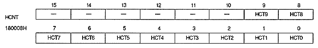

Scan field flag : Odd / even field flag (ODD), bit 1
Indicates the scanning status when the TV screen mode is interlace mode.
In non-interlace mode, it is always 1.
ODD
Display
0
During even field period
1
Scan during odd field period
TV system flag : PAL / NTSC flag (PAL), bit 0
Indicates the TV system status.
PAL
Display
0
NTSC method
1
PAL method
■ H counter register
H counter register indicates the H counter value. This is a read-only 16-bit register located at address 180008H.

H counter value bit : H counter bit (HCT9 to HCT0), bits 9 to 0
This signal is controlled by EXLTEN of the external signal enable register and represents the value of the latched H counter. The bit configuration of this register varies depending on the graphic mode setting, as shown in Table 2.3. For normal graphics, the H counter value of HCT0 of the least significant bit is invalid data. In the case of dedicated normal graphics, the H counter value of HCT9 of the most significant bit is invalid data. In the case of dedicated high-resolution graphics, the H counter value is in 2-dot units because the most significant bit, HCT9, is invalid and there is no H0 bit.